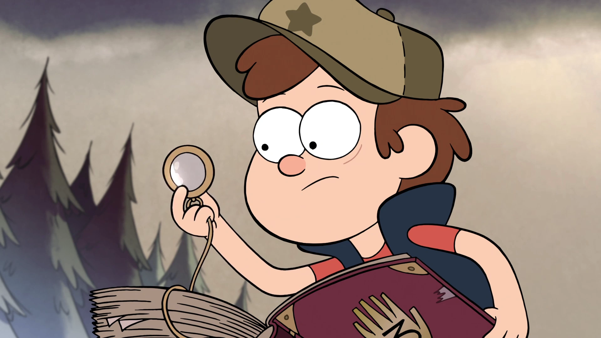
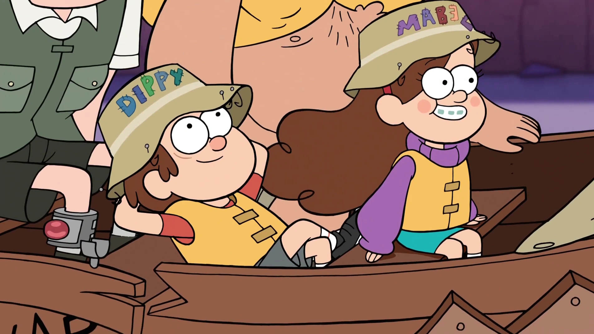

Image from Gravity Falls Wiki - Fandom and belong to Disney Television Animation
The first episode begins with twins Dipper and Mabel Pines riding in a golf cart away from a large shadowy monster, as Dipper narrates. He says that their parents sent them away for the summer to Gravity Falls, Oregon, to live with their great uncle, or “Grunkle” Stan in the Mystery Shack, which is a tourist trap. Dipper finds a mysterious journal hidden in the woods, where he finds the truth about Gravity Falls’ supernatural side. Meanwhile, Mable finds a new boyfriend, Norman, but Dipper suspects that Norman’s a zombie. While searching for evidence, Dipper sees Norman’s hand fall off. Mabel goes on a date with Norman, and Dipper commandeers a golf cart to find and stop Norman. Norman then reveals himself to be a bunch of gnomes, which want to marry Mabel and make her their queen; they kidnap her when she refuses. Dipper arrives in time to save her and they run away in the golf cart, but the gnomes, who had assembled into a giant monster, were close behind. When they return to the Mystery Shack, Mabel agrees to marry the gnomes, but then sucks the leader into a leaf blower, and sends him flying into the pile of gnomes. The gnomes scatter and the Pines twins hug.

Image from Gravity Falls Wiki - Fandom and belong to Disney Television Animation
The second episode starts with Grunckle Stan bringing the kids on a fishing trip, which they aren’t too happy about. When they get there, however, Old Man McGucket runs onto the dock raving about a monster called the Gobblewonker. Dipper sees this as a chance to get money, remembering a monster photo contest he read about in the paper. They abandon their Grunkle Stan to chase after the monster with Soos, an employee at the Mystery Shack. As they search for the monster, Stan tries desperately to find a friend to fish with. When they find the monster, it chases them into a cave, where it gets stuck. As Dipper takes pictures, the monster’s eyes stop glowing and it breaks down, revealing itself to be a robot. It turns out to have been built and operated by Old Man McGucket, who tells the kids the lengths old-timers go through to have quality time with those they love. Dipper and Mabel feel bad, and join Stan for the rest of the time at the lake.